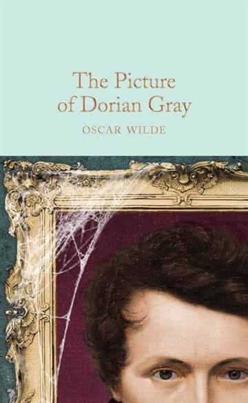

Petra Rastić
Digitalni multimedij 1
Zovem se Petra Rastić, imam 20 godina
i rodila sam se u Zagrebu.
Od malena sam vrlo živahno dijete sa puno
interesa, što se prebacilo u odraslije godine.
U slobodno vrijeme obožavam čitati knjige,
stripove, slikati, crtati, igrati igrice, slušati
raznovrsnu muziku, gledati crtiće i filmove
te mnoge druge stvari.


| Neki interesi |
|---|
| Visual Kei |
| Seinen |
| Fanfiction |
| Omori | >